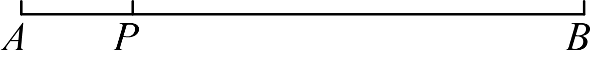
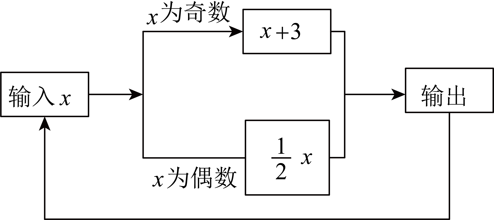
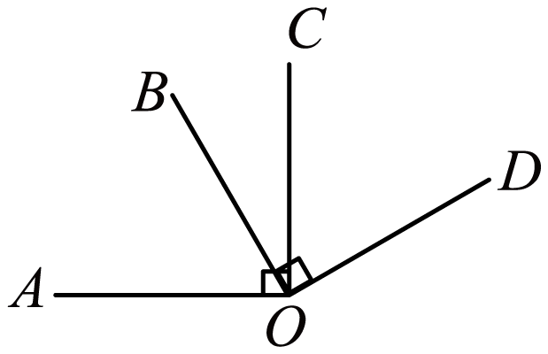
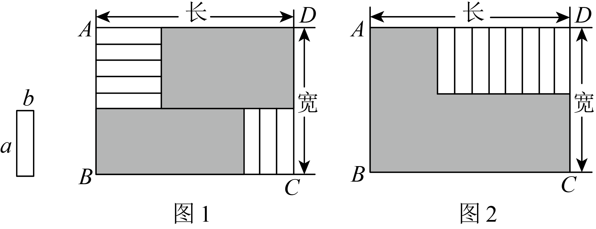
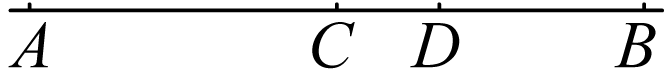
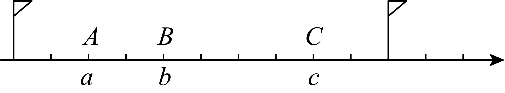
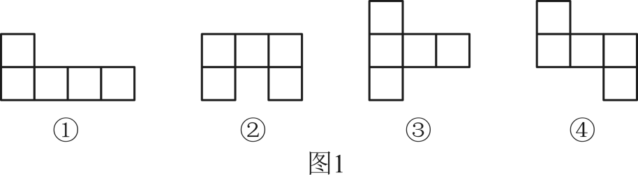
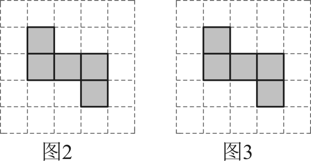
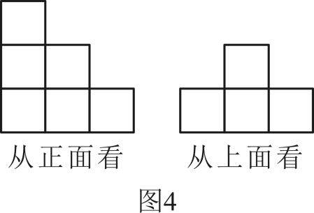

七年级数学上学期期末模拟卷·拔尖卷
【北师大版2024】
姓名：___________班级：___________考号：___________
考卷信息：
本卷试题共25题，单选10题，填空6题，解答9题，满分120分，限时120分钟，本卷题型针对性较高，覆盖面广，选题有深度，可量化学生的掌握程度！
一、选择题（本大题共10小题，每小题3分，满分30分）
1．（25-26七年级上·安徽宣城·期中）计算(−2)2026+(−2)2025的结果为（ ）
A．−22026 B．−22025 C．22025 D．22026
2．下午14点20分，时钟的时针与分针夹角的度数是（ ）
A．40° B．50° C．60° D．70°
3．（25-26七年级上·安徽六安·期中）已知a，b为系数，且ax2+2xy−x与3x2−2bxy+3y的差中不含二次项，a2−4b的值（ ）
A．13 B．8 C．5 D．9
4．已知∠A=20°50′，∠B=20.5°，∠C=19°58′ 那么( )
A．∠A>∠B>∠C B．∠A=∠B>∠C
C．∠C>∠A=∠B D．∠B>∠A>∠C
5．将1，2，3，4，…，60这60个自然数，任意分成30组，每组两个数，将每组的两个数中的任意一个数记做a，另一个数记做b，代入代数式a−b+a+b中进行计算，求出结果，30组分别代入后可求出30个结果，则这30个值的和的最大值是（ ）
A．2730 B．1565 C．1735 D．1830
6．“共享单车”为人们提供了一种经济便捷、绿色低碳的共享服务，成为城市交通出行的新方式．小张对他所在小区居民当月使用“共享单车”的次数进行了抽样调查，并绘制成了如图所示的频数分布直方图（每一组含前一个边界值，不含后一个边界值），则下列说法错误的是（）

A．小张一共抽样调查了74人
B．样本中当月使用“共享单车”30次～40次的人数最多
C．样本中当月使用“共享单车”不足20次的有12人
D．样本中当月使用“共享单车”的不足30次的人数多于40次～60次的人数
7．（25-26七年级上·江苏宿迁·期中）已知关于x的一元一次方程x2025+5=2025x+m的解是x=19，那么关于y的一元一次方程5−y2025+5=20255−y+m的解是（ ）
A．21 B．−14 C．23 D．24
8．（24-25七年级上·湖南长沙·月考）如图，将一根绳子对折以后用线段AB表示，现从点P处将绳子剪断，剪断后的各段绳子中最长的一段为8cm，若AP:PB=1:4，则这根绳子原来的长度为（ ）

A．10cm B．20cm C．10cm或20cm D．10cm或24cm
9．（25-26七年级上·新疆克拉玛依·期中）有一数值转换器的原理如图所示，若开始输x的值5，可发现第一次输出的结果8，第二次输出的结果4，第三次输出的结果2，第四次输出的结果1……则第8次输出的结果是（ ）

A．1 B．2 C．4 D．8
10．如图，已知A，B（B在A的左侧）是数轴上的两点，点A对应的数为12，且AB=18，动点P从点A出发，以每秒2个单位长度的速度沿数轴向左运动，在点P的运动过程中，M，N始终为AP，PB的中点，设运动时间为t（t>0）秒，则下列结论中正确结论的个数是（ ）
①B对应的数是−6；
②点P到达点B时，t=9；
③BP=2时，t=8；
④在点P的运动过程中，线段MN的长度会发生变化．

A．①② B．①②③ C．①③④ D．①②③④
二、填空题（本大题共6小题，每小题3分，满分18分）
11．（25-26七年级上·四川成都·期中）已知a，b，c三个有理数在数轴上的对应位置如图所示，化简：a+b−c−a+b−a的结果为 ．

12．（24-25九年级上·江苏无锡·月考）如果a、b是定值，且关于x的方程2kx+a3=2+x+bk6，无论k为何值时，它的解总是x=1，那么2a+b的值是 ．
13．已知B、C两点把线段AD分成2:3:4三部分（B在C点左侧），M是线段AD的中点，N为CD中点，CM=2cm．则求MN= cm．
14．如图，∠AOC=∠BOD=90°，OB在∠AOC的内部，OC在∠BOD的内部，OE是∠AOB的一三等分线，若∠BOC=30°，则∠EOD的度数为 ．

15．（25-26七年级上·江苏连云港·期中）将8张长为a，宽为ba>b的小长方形纸片，按图1和图2所示的两种方式放在长方形ABCD内（相邻的小长方形既无重叠，又不留空隙）．图1中两块阴影部分的周长和为C1，图2中阴影部分的周长为C2．若长方形ABCD的长比宽大a−b，则C1−C2的值为 ．

16．（25-26七年级上·重庆·期中）对于任意两位数x和y，若x和y的个位数字和十位数字均为偶数，且0<x−y<10，那么我们称这两个数的和为“偶和数”，这两个数的差为“偶差数”，把“偶和数”与“偶差数”的和与4的商记为f(x,y)．例如：x=26,y=24 ，则“偶和数”为26+24=50，“偶差数”为26−24=2，所以f26,24=50+24=13．
（1）计算：f48,42= ；
（2）若f(x,y)能被7整除，则所有符合条件的x的值之和为 ．
三、解答题（本大题共9小题，满分72分）
17．（6分）（24-25七年级上·河南驻马店·期末）已知A=3a2b−2ab2+abc，晓风错将“2A−B”看成“2A+B”，算得结果C=4a2b−3ab2+4abc．
(1)计算B的表达式；
(2)求正确的结果的表达式；
(3)晓华说（2）中的结果的大小与c的取值无关，对吗？若a=18，b=15，求（2）中代数式的值．
18．（6分）（25-26七年级上·江苏宿迁·期中）定义：如果两个一元一次方程的解之和为1，我们就称这两个方程为“和1方程”，例如：方程4x=8和x+1=0为“和1方程”．
(1)若关于x的方程3x+m=0与方程4x−2=x+10是“和1方程”，求m的值；
(2)若“和1方程”的两个解的差为1，其中一个解为n，求n的值；
19．（6分）（24-25七年级上·江西吉安·期末）已知A，B，C，D四点在同一直线上，点D在线段AB上．

(1)如图，若线段AB=16，点C是线段AB的中点，BD=3CD，求线段CD的长度；
(2)若线段AB=15a，点C是线段AB上一点，且满足2AC=BC，AD:BD=3:2，求线段CD的长度．（用含a的式子表示）
20．（8分）（25-26七年级上·四川德阳·期中）将连续的奇数1,3,5,7,9…排成如图1所示的数阵：

(1)如图2，用十字形框按如图所示的方式任意框五个数．若框住的5个数中，正中间的一个数为15，求这5个数的和．设正中间的数为a，请用式子表示十字形框内五个数的和，通过你的计算，你发现这5个数的和与正中间的数有什么关系？
(2)十字形框中的五个数之和能等于105吗？能等于2025吗？请说明理由．
(3)请仿照图2，设计两个你喜欢的图形，使框住的几个数的和为135，在下面两个图中框出来．

21．（8分）华罗庚先生说；“数缺形时少直观，形少数时难入微，数形结合百般好，隔离分家万事休”．
【知识储备】
点M、N在数轴上分别表示有理数m、n，则M、N两点之间的距离可表示为|m−n|．
【初步运用】
（1）数轴上表示3与−4的两点之间的距离为______；
（2）已知数轴上某个点表示的数为x．
①若|x−1|=2，则x=______；
②若|x+3|=|x−5|，则x=______；
【深入探究】
（3）如图，数轴上每相邻两点之间的距离为1个单位长度，点A、B、C表示的数分别为a、b、c．

①|a−b|+|b−c|=______；
②若|b−2a|=4，则点C表示的数为______；
③若该数轴上另有两个点P、Q，它们分别表示有理数p、q，其中点Q在线段AC上，当|p−a|+|p−c|=8且|q−a|+|q−b|+|q−c|最小时，P、Q两点之间的距离为______．
22．（9分）（25-26七年级上·广西南宁·阶段练习）综合实践
怎样邮寄沃柑更经济?南宁武鸣沃柑是全国名特优新农产品，皮薄易剥，汁多味甜．小南家的沃柑每年通过网络进行包邮销售，因此需要较多快递费的支出． | |||||||||||
素材1 | 一客户在小南家定了10箱沃柑，每箱以10千克为标准，超过的千克数记为正数不足的千克数记为负数，记录如表所示：
| ||||||||||
素材2 | 据调查，某快递公司收费标准如下：首重1千克以内8元（含1千克），续重（超过1千克的部分）2元/千克，不足1千克按1千克计，超过20千克的需要额外支付包装费30元． | ||||||||||
素材3 | 据小南家常年的邮寄经验，包裹越大，沃柑受损率越高．一个包裹在20千克以内，沃柑几乎无受损（受损忽略不计）；一个包裹质量在80千克至120千克之间，沃柑的受损率估计为5%，破损部分由小南家按售价进行赔偿，返还给顾客相应现金． | ||||||||||
任务1 | 计算这10箱沃柑的总质量． | ||||||||||
任务2 | 方案一：分10箱邮寄，每箱一个包裹； 方案二：10箱打成一个大包裹邮寄， 请通过计算说明，选哪种方案邮寄，小南家支付的邮费更省?省多少钱? | ||||||||||
任务3 | 今年沃柑的成本价为3元/千克，售价为8元/千克．结合任务2，邮寄10箱沃柑哪种方案利润更高? | ||||||||||
23．（9分）（25-26七年级上·重庆·期中）一个点从数轴的原点开始，先向左移动3个单位到达A点，再向右移动7个单位到达C点；接着将数轴折叠，使点A和点C重合，折点记为B；最后将数轴展开．
(1)直接写出A，B，C三点所表示的数；
(2)动点P从点C出发，以每秒0.4个单位长度向左运动；动点Q，M分别以每秒0.5个单位长度和0.3个单位长度的速度从A，B两点同时出发，向右运动．记Q与M两点之间的距离为QM，M与P两点之间的距离为MP．
①求何时M与Q相距1个单位长度；
②在P，Q，M三个点运动的过程中，是否存在有理数m，使QM+mMP的值始终保持不变，若存在，请求出m的值；若不存在，请说明理由．
24．（10分）（24-25七年级上·重庆·期末）【问题情境】元旦节，班级需要进行文化布置，各个学习小组分工制作装饰品：
(1)小颖所在的综合实践小组准备制作一些无盖正方体纸盒收纳班级讲台上的小物件．图1中的哪些图形经过折叠能围成无盖正方体纸盒？______（填序号）．

(2)小志组准备制作一个有盖的大正方体盒子，他们先用5个大小一样的正方形制成如图2，3所示的拼接图形（阴影部分），经折叠后发现还少一个面，请你在图2，图3中的图形上再各拼接一个位置不同的正方形（用阴影表示），使新拼接成的图形经过折叠后能成为一个封闭的正方体盒子．

(3)小亮组制作了若干个小正方体盒子，搭成几何体的形状，它从正面和上面看到的图形如图4所示，则这样的几何体有______种？它最多需要______个小立方块？最少需要______个小立方块？请分别画出需要小立方块最少时，从左面看到的几何体的形状图．（画出所有可能的情况）

25．（10分）（25-26七年级上·陕西咸阳·期中）【问题提出】
（1）如图1，OC、OD是∠AOB内的两条射线，OD平分∠AOC，∠BOC=13∠COD，∠BOD=60°．求∠AOB的度数；
【问题探究】
（2）如图2，已知OC、OD、OE是∠AOB（∠AOB>110°）内的三条射线，OC平分∠BOD，∠COE=12∠BOC=20°，且OE在OC的左侧，现要在∠AOB内画一条射线OF，使得∠DOF=38∠BOD，求∠EOF的度数；
【拓展提升】
（3）如图3，张老师在黑板上画出∠AOB，并在∠AOB内部画出∠COD（射线OC在OD的左侧）和射线OE、OF，其中OE平分∠AOC，OF平分∠BOD，若∠AOB=α，∠COD=β，∠EOF=γ，α>γ>β，请你猜想α、β和γ之间的数量关系，并说明理由．